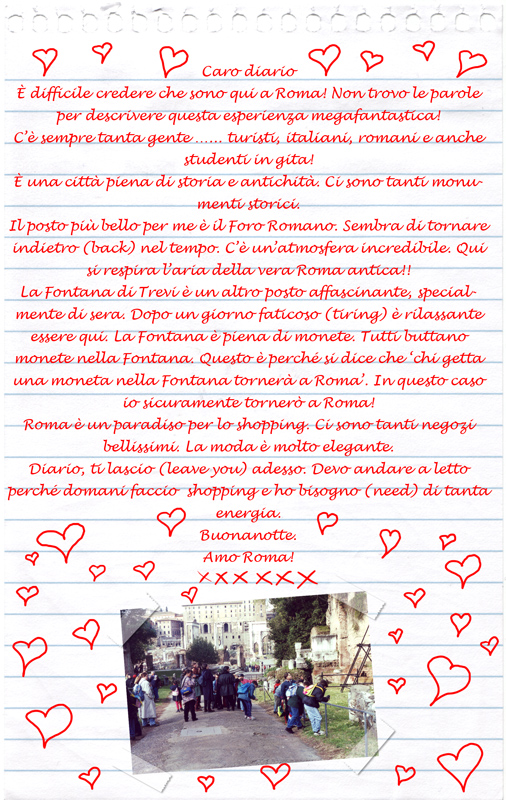

Attività 9 Caro diario
Roma definitely has its fascino! It is very difficult not to be captivated by the magical spell of this city.
Read this diary entry written by an Australian teenager visiting Roma for the first time.

Roma è una città molto particolare!
Here are some of the highlights of Roma. Buon viaggio!
Caro diario
The following phrases are used in the blog entry. What do they mean?
Drag the correct meaning of the phrases and drop it next to the corresponding phrases in italiano below. When you are finished, click on the Risposte button. The correct answers will lock in place. Redo the incorrect one.
How well did you understand?
Answer le domande in inglese.
Tocca a te!
Create your own version of the phrases used in the blog!
How many can you write for each one? Complete the phrases in worksheet_B3.9.
 |
When reading new material in a foreign language, the more words you understand, the easier it is to grasp the meaning. There will always be words that you don’t know.
The following are some ways to help you figure out the meaning of words that you don’t know.
- Look for similarities in inglese.
- Have a guess from the context.
- Look at the visual material for clues.
|
Un giorno a Roma
Find out about Cosa c’è da vedere e fare a Roma.
Be selective! You have only un giorno!
Choose the sights and activities that interest you and that you would like to see.
Make brief notes and where possible include visuals in the same worksheet above.
For this exercise you may use the Internet or print material. Include pictures where possible.
Una sfida – prova di scrivere in italiano!
|
Two simple hints:
- keep your information simple
- refer to the relevant language that you have been introduced to help you to write the content.
|
If you find this exercise too difficult to do in italiano, do it in inglese. |